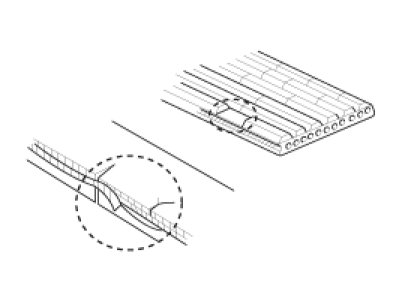
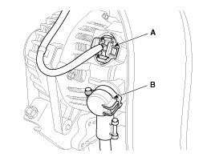
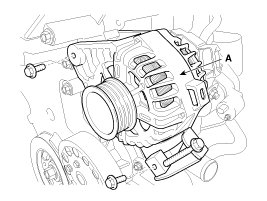

Alternator - With ISG (Idle Stop & Go) System
On-vehicle Inspection
CAUTION:
- Check that the battery cables are connected to the correct terminals.
- Disconnect the battery cables when the battery is given a quick charge.
- Never disconnect the battery while the engine is running.
Check The Battery Terminals And Fuses
1. Check that the battery terminals are not loose or corroded.
2. Check the fuses for continuity.
Inspect Drive Belt
1. Visually check the belt for excessive wear, frayed cords etc.
If any defect has been found, replace the drive belt.
NOTE:
Cracks on the rib side of a belt are considered acceptable. If the belt has chunks missing from the ribs, it should be replaced.

Removal
1. Disconnect the battery negative (-) cable.
2. Remove the drive belt.
3. Disconnect the alternator connector (A) and the cable from the alternator "B" terminal (B).
Tightening torque :
9.8 - 14.7 N.m (1.0 - 1.5 kgf.m, 7.2 - 10.9 lb-ft)

4. Remove the alternator (A) after removing the bolts.
Tightening torque :
[12 mm bolt] 21.6 - 32.4 N.m (2.2 - 3.3 kgf.m, 15.9 - 23.9 lb-ft)
[14 mm bolt] 29.4 - 41.2 Nm (3.0 - 4.2 kgf.m, 21.7 - 30.4 lb-ft)

Installation
1. Install in the reverse order of removal.
CAUTION:
Adjust the alternator belt tension after installation.